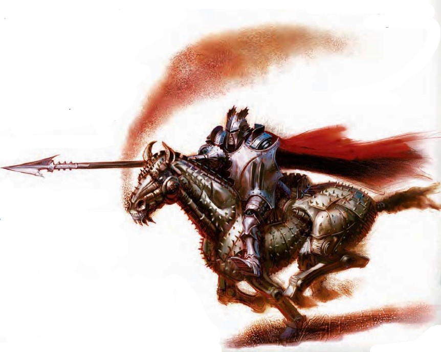

这个马型生物由坚固的金属板与紧绷的弹簧制成，汽笛的响声与齿轮咬合时的吱嘎声随着它的动作响起。

大型构装生物
| 生命骰： | 6d10+30（63HP） |
| 先攻： | -1 |
| 速度： | 50尺（10格） |
| 防御等级： | 15(-1体型，-1 敏捷，+7天生)，接触8，措手不及15 |
| 基本攻击/擒抱： | +4/ +13 |
| 攻击： | 近战 蹄踢+8(1D6+5) |
| 全力攻击： | 近战 2蹄踢+8(1D6+5) |
| 面宽/触及： | 10尺/ 5尺 |
| 特殊攻击： | ― |
| 特殊能力： | 黑暗视觉60尺，昏暗视觉，构装生物免疫，构装体特性，响应骑手，升级 |
| 豁免： | 强韧+2，反射+1，意志+2 |
| 属性： | 力量20，敏捷8，体质 ― ，智力―，感知10，魅力1 |
| 技能： | 跳跃+13，聆听+0，侦查+0 |
| 专长： | ― |
| 环境： | 见后文（未翻） |
| 组织： | 见后文（未翻） |
| 挑战等级： | 3 |
| 宝物： | 无 |
| 阵营： | 总是绝对中立 |
| 进化： | ― |
| 等级调整： | ― |
发条战马提供给它的主人一只完美驯顺、永不疲倦、永不需要食物的，做好战斗准备的坐骑。发条马是为中体型骑手设计的。同理，发条矮种马则为小体型骑手服务。
响应骑手（Rider Response）（Ex）：发条马被设计为响应握住它缰绳或用双膝控制它的骑手的身体操纵。没有骑手的发条马会立刻停下并无视威胁地保持静止，直到被一位骑手骑上为止。如果骑手失去意识、晕眩、麻痹、死亡、或因其他原因导致无法行动，发条马同样会停下并静止。发条马不能像真正的马或矮种马一样被教会技巧。骑手可以指挥它移动或攻击敌人，就像经过战争训练的坐骑一样，但骑手不能驱策发条马让它速度更快。
中型构装生物
| 生命骰： | 6d10+20（53HP） |
| 先攻： | +0 |
| 速度： | 40尺（8格） |
| 防御等级： | 17(+7天生)，接触10，措手不及17 |
| 基本攻击/擒抱： | +4/ +8 |
| 攻击： | 近战 蹄踢+8(1D4+4) |
| 全力攻击： | 近战 2蹄踢+8(1D4+4) |
| 面宽/触及： | 5尺/ 5尺 |
| 特殊攻击： | ― |
| 特殊能力： | 黑暗视觉60尺，昏暗视觉，构装生物免疫，构装体特性，响应骑手，升级 |
| 豁免： | 强韧+2，反射+2，意志+2 |
| 属性： | 力量18，敏捷10，体质 ― ，智力―，感知10，魅力1 |
| 技能： | 跳跃+8，聆听+0，侦查+0 |
| 专长： | ― |
| 环境： | 见后文（未翻） |
| 组织： | 见后文（未翻） |
| 挑战等级： | 3 |
| 宝物： | 无 |
| 阵营： | 总是绝对中立 |
| 进化： | ― |
| 等级调整： | ― |
响应骑手（Ex）：同发条马。
除非被骑手操纵，发条战马是完全无心智而简单迟滞在原地的。操纵一只发条战马对任何接受骑乘普通坐骑训练的人都是简单的任务。以一个自由动作，在骑乘技能上至少1级的角色可以指挥发条战马做出一个移动动作或者一次攻击。或者以一个移动动作命令它做出全力攻击，或进行一次与移动有关的整轮动作（例如冲锋）。在骑乘上没有任何级别的骑手必须使用移动动作或标准动作以分别做出类似的指挥。
被操纵做出的动作不能是复杂的战术选择，例如绊摔、闯越或援助他人攻击。不过发条战马可以在指挥下像马一样冲锋或跳跃。操纵不需要口令。
尽管缺乏智力，发条战马在战斗中至少和接受过战斗训练的坐骑一样好。
在知识（神秘）上有级数的人物可以更多地了解发条战马。当人物成功通过技能检定时，以下知识将被揭示，其中包括了更低DC的信息。
| 知识（神秘） | 结果 |
|---|---|
| DC 13 | 这种生物是发条战马，为取代普通马匹而设计出的构装生物坐骑。这个结果揭示了其所有构装生物特性。 |
| DC 18 | 发条战马没有骑手便无法动作，任何人都可以通过骑上它来操纵。操纵它并不需要口令。 |
| DC 23 | 虽然发条战马自身并不危险，足够有钱买下它们的人也许会更有威胁。 |
（*校注：截止A.C.2.51制作期间，这一页面原先所录的格式尚有一些问题，所用的译文也有相当程度的缺漏，事务繁忙，无力全文重译，暂将涉及有关玩家可用资源的部分重译一遍，张贴在此）
只要能够承担相应的资源，玩家角色便可以制造或是购买发条战马。
此外，他们还可支付费用，在制造发条战马之时或是之后对其进行升级，如同为魔法物品添加新能力（DMG 288）一般。
载重：发条公马clockwork stallion的轻载上限为400磅；中载401-800 磅；重载801-1,200磅。发条公马可以拖拽至多6,000磅的重量。
发条矮种马clockwork pony的轻载上限为150磅；中载151-300磅；重载301-450磅。发条矮种马可以拖拽至多2,250磅的重量。
制造
发条战马的身体由精密配平的齿轮、弹簧以及活塞构成，这些部件以特殊的炼金合剂进行处理，并由价值150gp的稀有合金制成。
组装躯体需要进行DC 18工艺（锻造）检定。
施法者等级4级；制造构装生物、活化物体、坐骑术；价格2,150gp；成本1,150gp+80XP。升级会如下文所述增加基础成本。
升级
以下能力可以添加到发条战马身上。发条公马与发条矮种马的升级费用相同。
盔甲熟练Armor Proficiency：战马获得对所有类型的盔甲熟练（盾牌不在此列）。没有这一升级的发条战马在穿着具装时，攻击检定以及与力量和敏捷属性有关的检定都会受到相应的防具检定减值。价格100gp；成本50gp+4XP。
伤害减免Damage Reductio：战马获得伤害减免5/魔法或精金。价格500gp；成本250gp+20XP。
精通战斗准备Improved Battle Readiness：这一升级允许熟练骑手以一个迅捷动作而非移动动作来指挥战马做出整轮动作。价格500gp；成本250gp+20XP。
精通冲撞Improved Bull Rush：战马获得精通冲撞Improved Bull Rush专长，允许骑手命令它尝试进行冲撞动作。价格150gp；成本75 gp+6XP。
精通闯越Improved Overrun：战马获得精通闯越Improved Overrun专长，允许骑手命令它尝试进行闯越动作。价格150gp；成本75gp+6XP。
精通绊摔Improved Trip：战马获得精通绊摔Improved Trip专长，允许骑手命令它尝试进行绊摔动作。价格200gp；成本100gp+8XP。
践踏Trample：要施加这一升级，战马必须拥有精通闯越升级。这项升级允许骑手在战马尝试进行闯越动作时使用践踏Trample专长。价格150gp；成本75gp+6XP。